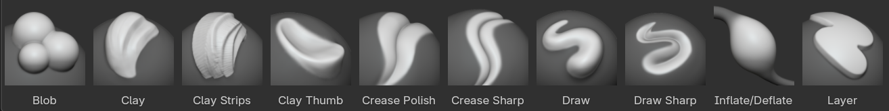
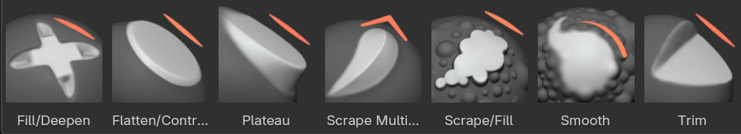
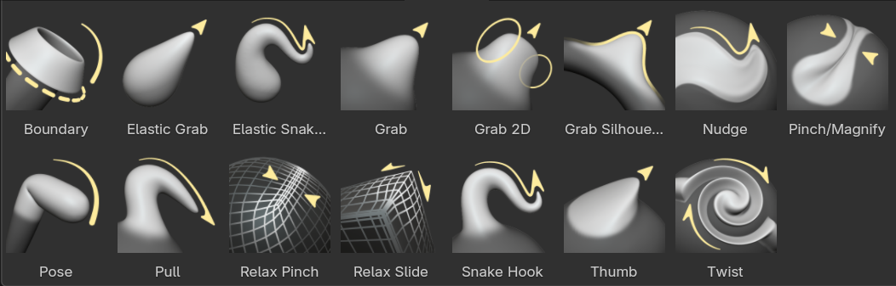
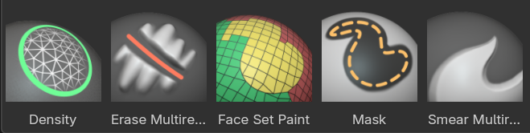
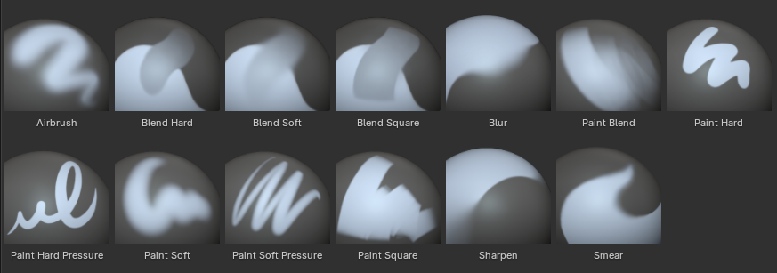
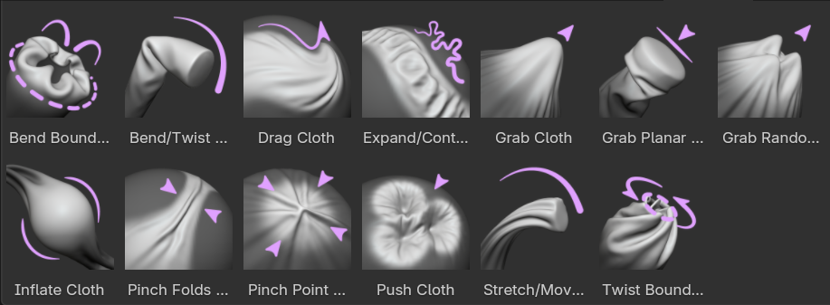

Brush asset sculpt mesh¶
Đây là danh sách tất cả brush asset 'Essentials' đi kèm Blender. Chúng dựa trên nhiều Brush Types khác nhau, được ghi chú cho từng brush.
Brush Add/Subtract¶
Những brush này nhìn chung đẩy vertex ra ngoài và vào trong, và có khả năng tùy biến cao nhất để đạt được nhiều hiệu ứng đa dạng. Thông thường hình thu nhỏ của chúng không dùng màu.

- Draw
- Brush Type: DrawPhím tắt: V
Brush tiêu chuẩn để đẩy vertex vào trong và ra ngoài theo hướng bề mặt.
- Draw Sharp
- Brush Type: Draw SharpPhím tắt: Shift V
Giống Draw nhưng có Falloff sắc hơn nhiều. Hữu ích để tạo nếp gấp và các góc sắc.
- Clay
Brush Type: Clay
Tương tự brush Draw nhưng có hiệu ứng làm phẳng và làm mượt nhẹ. Hữu ích để tinh chỉnh và dựng khối.
- Clay Strips
- Brush Type: Clay StripsPhím tắt: C
Giống brush Clay, nhưng mạnh mẽ hơn với falloff vuông. Chuẩn phổ biến để dựng khối thô.
- Clay Thumb
- Brush Type: Clay Thumb
Giống brush Clay, nhưng chuyên để mô phỏng hiệu ứng kéo ngón tay cái qua bề mặt. Đẩy hình học vào trong và sang ngang.
- Layer
Brush Type: Layer
Vẽ với chiều cao cố định. Hữu ích để thêm các lớp phẳng lên bề mặt.
- Inflate/Deflate
- Brush Type: InflatePhím tắt: I
Di chuyển mesh theo nhiều hướng. Hữu ích để phồng hoặc co bề mặt và khối.
- Blob
Brush Type: Blob
Phóng to mesh khi bạn vẽ. Hữu ích như một hiệu ứng phồng bổ sung trên nét vẽ.
- Crease Polish
- Brush Type: CreasePhím tắt: Shift C
Brush Draw kèm hiệu ứng pinch. Hữu ích để tinh chỉnh các nếp gấp sẵn có hoặc cẩn thận tạo nếp mới.
- Crease Sharp
Brush Type: Crease
Brush Crease sắc và mạnh hơn nhiều. Rất tốt để tạo các đường pinch mảnh và sâu.
Brush Contrast¶

Nhận diện qua hình thu nhỏ và con trỏ màu đỏ. Những brush này nhìn chung làm phẳng hoặc tăng độ tương phản của bề mặt.
- Smooth
- Brush Type: SmoothPhím tắt: S
Làm mượt các điểm bất thường trên bề mặt và co khối lại bằng cách lấy trung bình vị trí các vertex. Một brush thiết yếu được dùng thường xuyên.
- Flatten/Contrast
Brush Type: Plane
Đẩy các vertex về một chiều cao trung bình để tạo bề mặt phẳng. Hoặc đẩy chúng ra xa tâm để tăng độ tương phản.
- Plateau
Brush Type: Plane
Tương tự Flatten nhưng với hướng và độ sâu bị khóa để tạo bề mặt phẳng đồng đều.
- Fill/Deepen
Brush Type: Plane
Đẩy bề mặt hướng lên về một mặt phẳng. Hữu ích để lấp các lỗ và khe hở. Hoặc làm sâu thêm các lỗ sẵn có khi giữ 'Ctrl'.
- Scrape/Fill
- Brush Type: PlanePhím tắt: Shift T
Đẩy bề mặt vào trong. Hoặc lấp đầy bề mặt khi giữ 'Ctrl'. Đây là brush phổ biến nhất để làm phẳng mesh.
- Trim
Brush Type: Plane
Đẩy bề mặt vào trong theo một hướng bị khóa. Độ sâu có thể được xác định bằng cách đi sâu hơn về phía bề mặt dọc theo nét vẽ.
- Scrape Multiplane
Brush Type: Scrape Multiplane
Cạo mesh bằng hai mặt phẳng nghiêng cùng lúc, tạo ra một cạnh sắc giữa chúng.
Brush Transform¶

Nhận diện qua biểu tượng và con trỏ màu vàng. Những brush này nhìn chung di chuyển, pinch và phóng to mesh.
- Pinch/Magnify
- Brush Type: PinchPhím tắt: P
Kéo các vertex về phía tâm brush. Hữu ích để tinh chỉnh các góc và nếp gấp. Hoặc đẩy chúng ra xa tâm.
- Grab
- Brush Type: GrabPhím tắt: G
Di chuyển các vertex theo chuột. Một brush thiết yếu để dựng hình và điều chỉnh tỷ lệ.
- Grab 2D
Brush Type: Grab
Tương tự Grab nhưng với falloff chiếu vô hạn. Hữu ích để nắm lấy các hình dạng rộng hơn và tạo cảm giác giống khi dùng công cụ Liquify trong các ứng dụng vẽ ảnh.
- Grab Silhouette
Brush Type: Grab
Tương tự Grab nhưng chỉ ảnh hưởng đến các vertex có pháp tuyến hướng ngang ra xa góc nhìn. Rất hữu ích để điều chỉnh đường bao ngoài của các object mỏng.
- Elastic Grab
Brush Type: Elastic Deform
Được dùng để mô phỏng biến dạng thực tế khi nắm giữ các object Elastic.
- Elastic Snake Hook
Brush Type: Snake Hook
Tương tự Elastic Grab nhưng xoay hình học chịu ảnh hưởng dựa trên hướng nét vẽ.
- Scene Project
- Brush Type: Scene Project
Chiếu các vertex của object đang hoạt động lên các mesh khác đang hiển thị trong scene.
Cách này cung cấp khả năng kiểm soát linh hoạt và cục bộ hơn modifier Shrinkwrap, nên hữu ích để đưa hình học ôm sát bề mặt mục tiêu một cách thủ công.
- Snake Hook
- Brush Type: Snake HookPhím tắt: K
Kéo các vertex theo nét vẽ để tạo các hình dài giống con rắn. Hình học được xoay và phóng to để cho phép kéo liên tục. Hữu ích hơn nhiều khi Dyntopo được bật.
- Pull
Brush Type: Snake Hook
Lặp đi lặp lại việc nhặt và thả hình học giống Snake Hook, nhưng mềm hơn nhiều. Hữu ích cho biến đổi tinh tế ở phạm vi nhỏ trên những nét vẽ dài.
- Thumb
Brush Type: Thumb
Giống Grab nhưng di chuyển các vertex theo hướng bề mặt. Hữu ích để giữ nguyên các bề mặt cụ thể.
- Pose
Brush Type: Pose
Mô phỏng biến dạng kiểu armature. Hữu ích để tạo pose và biến đổi nhanh.
- Nudge
Brush Type: Nudge
Tương tự Thumb nhưng nhặt vertex một cách động giống Snake Hook. Hữu ích để đẩy nhẹ thứ gì đó dọc theo bề mặt mesh.
- Twist
Brush Type: Rotate
Xoay các vertex bên trong brush theo hướng con trỏ di chuyển.
- Relax Slide
Brush Type: Relax Slide
Trượt topology của mesh theo hướng nét vẽ mà vẫn giữ hình dạng hình học của mesh. Hoặc làm mượt mesh khi giữ 'Shift'. Cũng hữu ích để phân bố lại topology ở nơi cần thiết.
- Relax Pinch
Brush Type: Relax Slide
Tương tự brush Relax Slide nhưng thay vào đó là pinch/thư giãn hình học.
- Boundary
Brush Type: Boundary
Biến đổi riêng các biên mesh bằng nhiều dạng biến dạng khác nhau.
Brush tiện ích¶

Không có màu phân biệt rõ. Đây là các brush đa năng hoặc chuyên dụng.
- Density
Brush Type: Density
Dọn dẹp hình học bằng cách gộp các cạnh ngắn. Chuyên dùng với Dyntopo.
- Mask
- Brush Type: MaskPhím tắt: M
Vẽ một vùng chọn lên các phần của mesh để không chịu ảnh hưởng bởi brush khác. Có thể tạm chuyển đổi sang brush này bằng Alt-LMB, để tạm chuyển sang xóa mask dùng Ctrl-Alt-LMB,
- Draw Face Sets
Brush Type: Draw Face Sets
Vẽ Face Set mới, làm mượt hoặc mở rộng Face Set sẵn có.
- Erase Multires Displacement
Brush Type: Erase Multires Displacement
Xóa thông tin displacement trên một modifier Multiresolution.
- Smear Multires Displacement
Brush Type: Smear Multires Displacement
Lem thông tin displacement trên một modifier Multiresolution.
Brush vẽ¶

Nhận diện qua hình thu nhỏ màu xanh dương. Những brush này được dùng để vẽ color attribute trong sculpt mode.
- Airbrush
Brush Type: Paint
Brush tròn mềm tích tụ theo thời gian thay vì theo khoảng cách nét vẽ.
- Blend Hard
Brush Type: Paint
Tương tự brush Average trong các chế độ khác với falloff tròn cứng. Dùng để pha trộn màu dọc theo nét vẽ.
- Blend Soft
Brush Type: Paint
Giống Blend Hard nhưng với falloff tròn mềm.
- Blend Square
Brush Type: Paint
Giống Blend Hard nhưng với falloff vuông cứng.
- Blur
Brush Type: Paint
Làm mượt màu đã vẽ; làm dịu các chuyển tiếp và giảm chênh lệch màu sắc nét.
- Paint Blend
Brush Type: Paint
Sự kết hợp giữa brush Paint và Blend. Ở lực ấn bút thấp, brush lấy trung bình màu, còn với lực ấn cao thì nó vẽ màu.
- Paint Hard
Brush Type: Paint
Một falloff tròn cứng đơn giản.
- Paint Hard Pressure
Brush Type: Paint
Falloff tròn cứng với độ nhạy lực ấn cho kích thước brush.
- Paint Soft
Brush Type: Paint
Falloff tròn mềm với độ nhạy lực ấn chỉ cho độ mạnh.
- Paint Soft Pressure
Brush Type: Paint
Falloff tròn mềm với độ nhạy lực ấn cho cả kích thước và độ mạnh.
- Paint Square
Brush Type: Paint
Falloff brush vuông cứng.
- Sharpen
Brush Type: Smear
Pinch màu vào trong để tạo cạnh hoặc điểm sắc.
- Smear
Brush Type: Smear
Lem màu dọc theo nét vẽ.
Brush mô phỏng¶
Những brush này giống brush thông thường nhưng được áp thêm một mô phỏng cloth. Lý tưởng nhất là dùng ở độ phân giải tương đối thấp, vì mật độ mesh quyết định kích thước của động lực học cloth.

- Drag Cloth
Brush Type: Cloth
Đẩy nhẹ hình học dọc theo bề mặt trong khi ít ảnh hưởng đến hình dạng tổng thể của object.
- Push Cloth
Brush Type: Cloth
Đẩy hình học vào trong hoặc ra ngoài.
- Grab Cloth
Brush Type: Cloth
Nắm chắc hình học bên trong bán kính brush, trong khi hình học xung quanh được mô phỏng để đi theo.
- Grab Planar Cloth
Brush Type: Cloth
Tương tự Grab Cloth nhưng dùng một đường thẳng làm bán kính brush thay vì hình tròn.
- Grab Random Cloth
Brush Type: Cloth
Tương tự Grab Cloth nhưng áp một noise texture để tạo biến đổi ngẫu nhiên nhiều hơn.
- Inflate Cloth
Brush Type: Cloth
Phồng hình học ra ngoài hoặc vào trong.
- Expand/Contract Cloth
Brush Type: Cloth
Tạo nén hoặc kéo giãn trên hình học.
- Pinch Point Cloth
Brush Type: Cloth
Pinch hình học về điểm tâm của bán kính, tạo nếp gấp từ mọi phía.
- Pinch Folds Cloth
Brush Type: Cloth
Chỉ pinch từ hai phía vuông góc theo hướng nét vẽ, tạo các nếp gấp song song dọc theo nét.
- Bend/Twist Cloth
Brush Type: Pose
Brush pose giúp xoay hình học.
- Stretch/Move Cloth
Brush Type: Pose
Brush pose giúp dịch chuyển và phóng to/thu nhỏ hình học.
- Bend Boundary Cloth
Brush Type: Boundary
Chỉ uốn các biên mở của mesh, gập hình học xung quanh trong quá trình này.
- Twist Boundary Cloth
Brush Type: Boundary
Xoắn các biên mở của mesh, tạo nếp gấp xoắn.